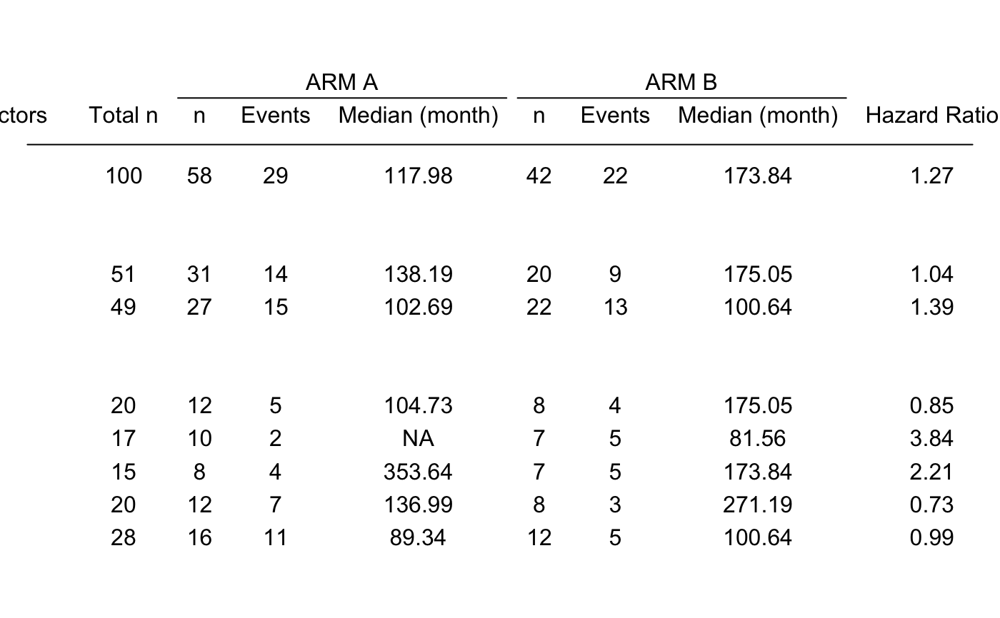
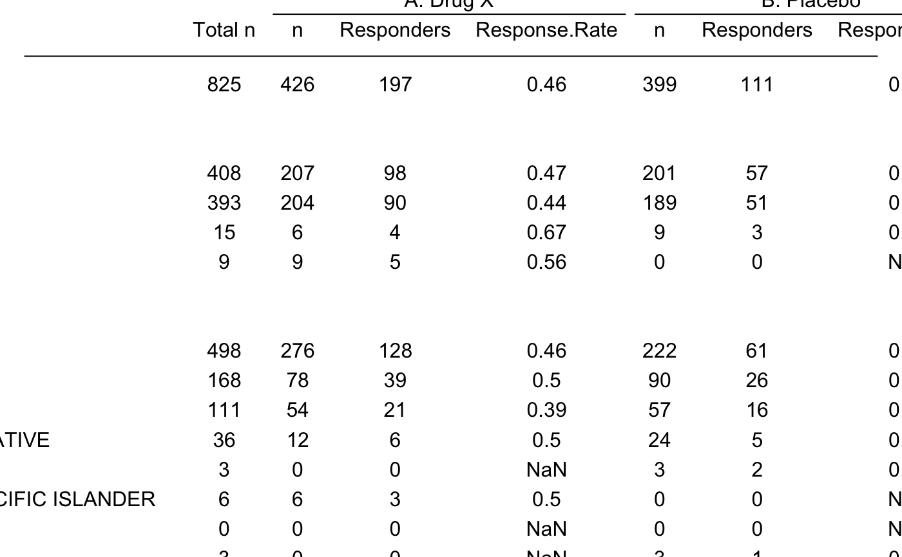
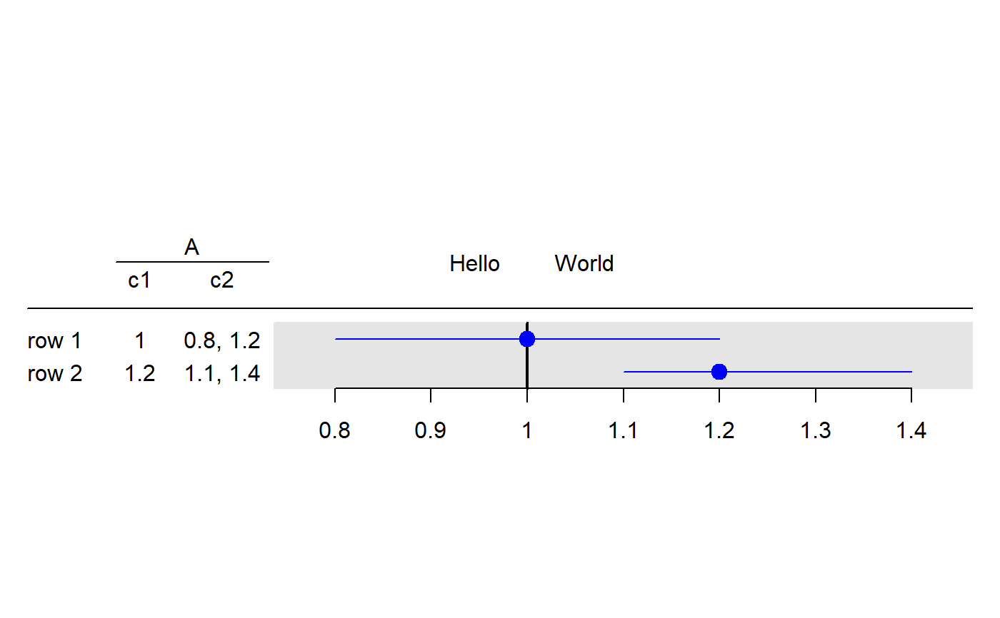

g_forest.RdCreate a forest plot from any rtable object that has a
column with a single value and a column with 2 values
g_forest(tbl, col_x, col_ci, vline = NULL, forest_header = NULL, xlim = NULL, logx = FALSE, x_at = NULL, width_row.names = NULL, width_columns = NULL, width_forest = unit(1, "null"), draw = TRUE, newpage = TRUE)
| tbl | an rtable object |
|---|---|
| col_x | column index with estimator |
| col_ci | column index with confidence intervals |
| vline | x coordinate for vertical line, if |
| forest_header | character vector of length 2, diplayed to the left and
right of |
| xlim | x limits for x-scales |
| logx | boolean for showing x-values on logrithm scale |
| x_at | numeric vector with x tick locations, if |
| width_row.names |
|
| width_columns |
|
| width_forest |
|
| draw | boolean, should plot be drawn |
| newpage | boolean if |
library(random.cdisc.data) ADSL <- radsl() ADTTE <- radtte(ADSL) ADTTE_f <- subset(ADTTE, PARAMCD == "OS" & ARMCD %in% c("ARM B", "ARM A")) tbl <- t_forest_tte( tte = ADTTE_f$AVAL, is_event = ADTTE_f$CNSR == 0, col_by = factor(ADTTE_f$ARM), group_data = as.data.frame(lapply(ADTTE_f[, c("SEX", "RACE")], as.factor)), ties = "exact", dense_header = TRUE )#> Error in time[[i]] <- sort(unique(y[who, 1])): attempt to select less than one element in integerOneIndex# note plot requires a certain width g_forest( tbl = tbl, col_x = 8, col_ci = 9, vline = 1, forest_header = c("Treatement\nBetter", "Comparison\nBetter"), xlim = c(.1, 10), logx = TRUE, x_at = c(.1, 1, 10) )#> Error in g_forest(tbl = tbl, col_x = 8, col_ci = 9, vline = 1, forest_header = c("Treatement\nBetter", "Comparison\nBetter"), xlim = c(0.1, 10), logx = TRUE, x_at = c(0.1, 1, 10)): tbl needs to be of class rtable# For response table ADSL <- radsl() ADRS <- radrs(ADSL) ADRS_f <- subset(ADRS, PARAMCD == "OVRINV" & ARMCD %in% c("ARM A","ARM B")) tbl <- t_forest_rsp( rsp = ADRS_f$AVALC %in% c("CR", "PR"), col_by = factor(ADRS_f$ARM), group_data = ADRS_f[, c("SEX", "RACE")] ) tbl#> A: Drug X B: Placebo #> Baseline Risk Factors Total n n Responders Response.Rate n Responders Response.Rate Odds Ratio 95% CI #> ---------------------------------------------------------------------------------------------------------------------------------------------------------------------------------------------------------------------------------------- #> ALL 855 408 191 0.47 447 135 0.3 0.49 (0.37, 0.65) #> #> SEX #> F 450 198 92 0.46 252 84 0.33 0.58 (0.39, 0.84) #> M 393 204 96 0.47 189 51 0.27 0.42 (0.27, 0.63) #> U 9 3 2 0.67 6 0 0 0 (NA, >999.9) #> UNDIFFERENTIATED 3 3 1 0.33 0 0 NaN (NA, NA) #> #> RACE #> ASIAN 453 213 101 0.47 240 70 0.29 0.46 (0.31, 0.67) #> BLACK OR AFRICAN AMERICAN 213 108 47 0.44 105 33 0.31 0.59 (0.34, 1.04) #> WHITE 144 63 30 0.48 81 26 0.32 0.52 (0.26, 1.02) #> AMERICAN INDIAN OR ALASKA NATIVE 39 21 11 0.52 18 5 0.28 0.35 (0.09, 1.29) #> MULTIPLE 0 0 0 NaN 0 0 NaN (NA, NA) #> NATIVE HAWAIIAN OR OTHER PACIFIC ISLANDER 6 3 2 0.67 3 1 0.33 0.25 (0, 6.56) #> OTHER 0 0 0 NaN 0 0 NaN (NA, NA) #> UNKNOWN 0 0 0 NaN 0 0 NaN (NA, NA)g_forest( tbl = tbl, col_x = 8, col_ci = 9, vline = 1, forest_header = c("Comparison\nBetter", "Treatement\nBetter"), xlim = c(.1, 10), logx = TRUE, x_at = c(.1, 1, 10) )# Works with any rtable tbl <- rtable( header = c("E", "CI"), rrow("", 1, c(.8, 1.2)), rrow("", 1.2, c(1.1, 1.4)) ) g_forest( tbl = tbl, col_x = 1, col_ci = 2 )tbl <- rtable( header = rheader( rrow("", rcell("A", colspan = 2)), rrow("", "c1", "c2") ), rrow("row 1", 1, c(.8, 1.2)), rrow("row 2", 1.2, c(1.1, 1.4)) ) g_forest( tbl = tbl, col_x = 1, col_ci = 2, vline = 1, forest_header = c("Hello", "World") )